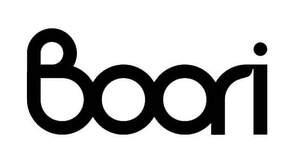

Trade Mark Journal No.2026/006 6 February 2026
UK00004327985 22 January 2026 (11,16,20,24,27,28)

- Class 11
- Lighting apparatus and installations; Lighting fixtures; Lamps; Electric lamps; Table lamps; Incandescent burners; Fairy lights for festive decoration; String lights for festive decoration; Lamps for festive decoration; LED mood lights.
- Class 16
- Children's books incorporating an audio component; Books for children; Pencil holders; Pen cases; Stationery; Desk mats; Writing cases [stationery]; Office stationery; Document holders [stationery]; Desktop cabinets for stationery [office requisites].
- Class 20
- Cots for babies; Cradles; Travel cots; Moses baskets; Infant walkers; Bath seats for babies; Diaper changing stations; Wall-mounted diaper (napkin) changing platforms; Anti-roll cushions for babies; Cushions; Mats for infant playpens; Playpens for babies; Bumper guards for cots, other than bed linen; Maternity pillows; Pillows; Sleeping mats; Chair pads; Counters [tables]; Coatstands; Towel stands [furniture]; Writing desks; Wardrobes; Kitchen cabinets; Shoe cabinets; Shelves for storage; Book rests [furniture]; Bookshelves; Desks; Bookcases; Filing cabinets; Chairs [seats]; Chaise longues; Armchairs; Cabinet work; Office furniture; Sofas; Dressing tables; Children's furniture; Dining tables; Dining chairs; Sofa beds; Bedsteads of wood; Reusable baby changing mats; Racks [furniture]; Wood ribbon; Costume stands; Height adjustable tables.
- Class 24
- Baby buntings; Cot bumpers [bed linen]; Baby blankets; Children's towels; Children's blankets; Sleeping bags for babies; Diaper changing cloths for babies; Household linen; Mattress covers; Bed covers; Quilts; Bedsheets; Bed blankets; Travelling rugs [lap robes]; Bed blankets made of cotton; Wall hangings of textile; Canvas for tapestry or embroidery; Towels of textile; Handkerchiefs of textile; Face towels of textile; Upholstery fabrics; Woollen blankets; Cot blankets; Blankets (Bed -).
- Class 27
- Floor mats; Protective floor coverings; Wrestling mats; Gymnastic mats; Non-slip mats; Rugs; Wallpaper; Decorative wall hangings, not of textile; Textile wallpaper; Wallpaper with 3D visual effects.
- Class 28
- Toys; Building blocks [toys]; Building games; Rattles [playthings]; Dolls' beds; Dolls' houses; Dolls; Play tents; Dolls' rooms; Playhouses for children; Plush toys with attached comfort blanket; Plush toys; Stuffed toys; Toy vehicles; Baby gyms; Tricycles for infants [toys]; Balance bicycles [toys]; Toy strollers; Action figures; Toy mobiles; Toy musical instruments; Jigsaw puzzles; Baby rattles; Toys for babies; Smart toys; Multiple activity toys for babies.
ORION HOLDINGS (OVERSEAS) LIMITED
Representative: QUN CHI